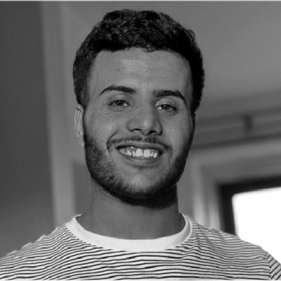

UX-strategie
feb – apr 2026
UX-strategieproject
PicApp Sweden AB · Brugge
Erasmus+ stage in Brugge: met een internationaal team de onboarding en gebruikersactivatie verbeterd van een Zweedse ride-sharing-app.
Student Business IT Management
Digitale innovatie & AI · UX-strategie · Power Platform. Ik werk graag op het snijvlak van technologie, psychologie en strategie.
Op zoek naar een stage of startersfunctie in IT

01 · Over mij
Ik ben tweedejaars student Business IT Management aan Hogeschool Inholland, met een passie voor digitale innovatie en AI. Ik werk graag op het snijvlak van technologie, psychologie en strategie: analytisch, kalm en ‘eerst denken, dan doen’.
In projecten heb ik gewerkt aan UX-strategie voor een internationale app, een BI-proof of concept met Power BI en Python, en de organisatie van een cultuurfestival. Naast mijn studie werk ik als assistent-manager in de horeca, waar ik leer een team aan te sturen en overzicht te houden.
Buiten werk en studie houd ik van voetbal en bodyweight-training, en zet ik me graag in voor duurzaamheid en mensenrechten.
02 · Projecten
PicApp Sweden AB · Brugge
Erasmus+ stage in Brugge: met een internationaal team de onboarding en gebruikersactivatie verbeterd van een Zweedse ride-sharing-app.
Inholland Bibliotheek
In teamverband een proof of concept ontwikkeld met Microsoft Power BI en Python.
Amsterdam
Met ons team een gratis cultuurfestival georganiseerd, gehouden op 20 juni 2026.
03 · Werkervaring
Bar Baggerbeest · parttime
Ik ondersteun de leiding bij teamaansturing, verkoop en de dagelijkse operatie. In dienst sinds februari 2025, begonnen als bartender.
Parkview Hotel · parttime
Aan de front desk verantwoordelijk voor reserveringen, gastontvangst en betalingen. Sprong bij waar nodig, zoals bij e-mail en fietsverhuur.
PostNL
04 · Opleiding & certificaten
Hogeschool Inholland
Tweede jaar; verwachte afronding in 2029.
Hogeschool van Amsterdam
RTE Universiteit, Turkije
VIVES Hogeschool
Calidus
05 · Vaardigheden & talen
06 · Contact
Wil je kennismaken, een stage of vacature bespreken of samenwerken? Vul het formulier in — je e-mailprogramma opent met een ingevuld bericht. Ik reageer zo snel mogelijk.